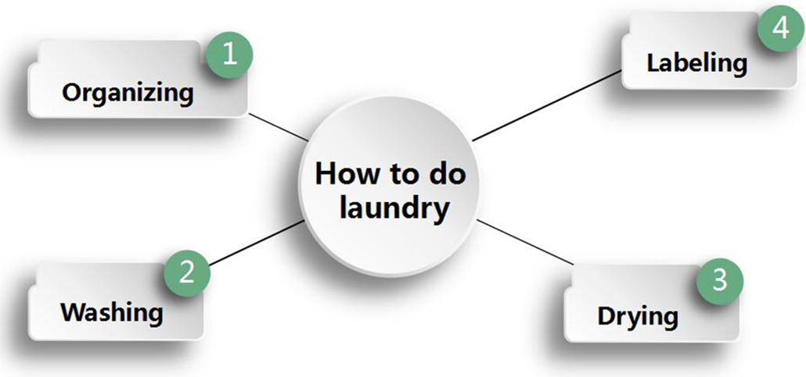
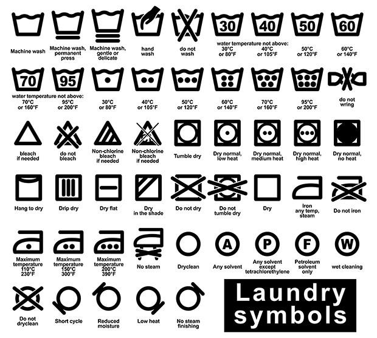

Ou te pouse li koupe ase lontan, li se finalman tan pou aprann kijan pou fè lesiv. Ou ta ka gen laperèz ke lè ou louvri machin pou lave a ou pral jwenn yon chemiz blan ki kounye a woz oswa yon gwo mayo tounen yon ti apre yon sèl chaj seche rad. pa enkyete w. Washun Laundry Systems la pou ede w fè lesiv ou ak kèk etap fasil.
Evite risk pou w vire chemiz blan w yo woz lè w byen separe rad yo an pil diferan - limyè, nwa ak delika.
Limyè yo ka nenpòt bagay soti nan rad blan ak pastèl.
•Darks bezwen separe de limyè paske yo gen tandans pou senyen koulè.
•Delika yo se nenpòt rad dantèl, swa oswa saten.
•Pwo konsèy: Li entelijan tou pou separe rad ki gen tandans atire ak kreye poul. Lint kreyatè yo se sweatshirts, sèvyèt, rad flanèl pandan y ap atire lint yo gen tandans yo dwe kòsaj nilon ak mikrofibr tankou angrenaj atletik gason ak fanm.
Li se tou entelijan pou prepare rad anvan ou jete yo nan machin pou lave a nan seche rad la - asire w ke ou deboutonnen chemiz ak pantalon, dewoule manchèt ak mare kòd pou evite sa yo soti nan akrochaj nan machin pou lave oswa seche rad.
Oke ou te fè li sot pase separe rad ou - sa ka yon doulè - kounye a sou lave a. Bagay ki pi enpòtan pou w sonje se pa twò chaje machin lave a - ranpli apeprè 80 pousan ak rad ou.
•Rad lejè yo ta dwe lave ak dlo cho – sa a gen ladan tou atik ki gen anpil sal pou retire bakteri.
•Rad nwa ta dwe lave ak dlo frèt pou evite koulè senyen.
•Ou kapab tou sèvi ak dlo frèt ansanm ak sik lave delika oswa dou pou netwaye bagay delika.
Premye bagay ou absoliman dwe fè anvan menm mete rad ou nan seche rad la se retire ak netwaye ekran poul la. Yon ekran lint sal se yon danje dife epi li pral afekte pèfòmans seche rad. Apre sa, ajoute kèk atik nan yon moman pou fè pou evite rad nan asanblaj nan seche rad la ki lakòz ondilasyon. Tcheke etikèt rad ou pou jwenn anviwònman sèk rekòmande a. Apre sik la fini, li enpòtan pou pliye oswa pann rad ou byen vit pou evite ondilasyon.
Tout rad, sèvyèt, twal ak nenpòt lòt rad gen yon etikèt ak enstriksyon pou lave ou ka swiv. Men, règ yo sètènman pa mete nan wòch. Sepandan, konnen kijan pou omwen li etikèt la itil. Men yon gid itil ki detaye tout diferan senbòl ou pral wè sou yon etikèt.Tout rad, sèvyèt, twal ak nenpòt lòt rad gen yon etikèt ak enstriksyon pou lave ou ka swiv. Men, règ yo sètènman pa mete nan wòch. Sepandan, konnen kijan pou omwen li etikèt la itil. Men yon gid itil ki detaye tout diferan senbòl ou pral wè sou yon etikèt.

 EN
EN  ES
ES PT
PT AR
AR RU
RU FR
FR